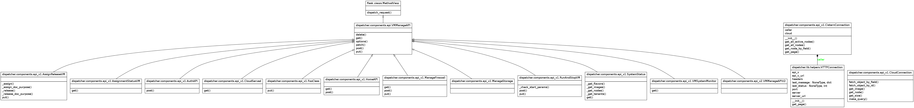

API V.1¶
How to communicate with middleware. This documents explains how to deal with the RESTful API layer of Orchestrator, providing in the same way useful examples do modify and customize. In particular there are several sections to learn how to communicate and interact with the Orchestrator, like status, start and stop vms, assign and release vms
HIERARCHY¶
Each url is bound to a routing class, the picture describes the class hierarchy and how are bound between them. “VMManageAPI” class is a little more than an abstract class, there are defined all default actions in a generic way to call a not_implemented method that raise a NotImplemented Exception. Deriving class from this class we have a safe docking, for each inherited class you have to override those methods that can reply to requests.
{kind=link}
STATUS¶
NODES¶
- DESCRIPTION
- Retrieve nodes information
- URL STRUCTURE
http://www.example.com/api/<version>/nodes{/<cloud>}
version: API version. cloud: cloud to use, if not specified it will be used “default” expressed in settings extension: json - VERSIONS
- v1
- METHODS
- GET
- ERRORS
200: Ok 500: Cloud not valid - EXAMPLES
Examples¶
GET nodes from the fake_driver with http¶
$ http --pretty all -jv GET http://localhost:5050/api/v1/nodes/fake_driver GET /api/v1/nodes/fake_driver HTTP/1.1 Accept: application/json Accept-Encoding: gzip, deflate, compress Content-Type: application/json; charset=utf-8 Host: localhost:5050 User-Agent: HTTPie/0.6.0 HTTP/1.0 200 OK Content-Length: 683 Content-Type: application/json Date: Mon, 29 Jun 2015 14:40:00 GMT Server: Werkzeug/0.9.1 Python/2.7.3 Set-Cookie: session=eyJfaWQiOnsiIGIiOiJPV0pqTjJNeVl6ZGtaRGt6TUdKa1l6RmlOemc0TldSa04yVTBaR1ppTUdFPSJ9fQ.CHLqQA.DfFClm88iu5K4Pk9axMktu-J9Cg; HttpOnly; Path=/ { "nodes": [ { "cloud_type": "Dummy Node Provider", "extra": { "foo": "bar" }, "id": "1", "name": "dummy-1", "private_ips": [], "provider": "dummy", "public_ips": [ "127.0.0.1" ], "state": 0, "uuid": "2c183c20f71eb5732512d6cfe1f75ebc9d9bb4dd" }, { "cloud_type": "Dummy Node Provider", "extra": { "foo": "bar" }, "id": "2", "name": "dummy-2", "private_ips": [], "provider": "dummy", "public_ips": [ "127.0.0.1" ], "state": 0, "uuid": "46ff62f5eafc7837de6ec1450b8e0e608db06d7a" } ], "status": "ok" }
GET nodes from the fake_driver with curl¶
$ curl -s -X GET -H 'Content-Type: application/json' http://localhost:5050/api/v1/nodes/fake_driver { "nodes": [ { "cloud_type": "Dummy Node Provider", "extra": { "foo": "bar" }, "id": "1", "name": "dummy-1", "private_ips": [], "provider": "dummy", "public_ips": [ "127.0.0.1" ], "state": 0, "uuid": "2c183c20f71eb5732512d6cfe1f75ebc9d9bb4dd" }, { "cloud_type": "Dummy Node Provider", "extra": { "foo": "bar" }, "id": "2", "name": "dummy-2", "private_ips": [], "provider": "dummy", "public_ips": [ "127.0.0.1" ], "state": 0, "uuid": "46ff62f5eafc7837de6ec1450b8e0e608db06d7a" } ], "status": "ok" }
GET nodes from a wrong driver with http¶
$ http --pretty all -jv GET http://localhost:5050/api/v1/nodes/wrong_driver GET /api/v1/nodes/wrong_driver HTTP/1.1 Accept: application/json Accept-Encoding: gzip, deflate, compress Content-Type: application/json; charset=utf-8 Host: localhost:5050 User-Agent: HTTPie/0.6.0 HTTP/1.0 500 INTERNAL SERVER ERROR Content-Length: 199 Content-Type: application/json Date: Mon, 29 Jun 2015 14:40:01 GMT Server: Werkzeug/0.9.1 Python/2.7.3 Set-Cookie: session=eyJfaWQiOnsiIGIiOiJPV0pqTjJNeVl6ZGtaRGt6TUdKa1l6RmlOemc0TldSa04yVTBaR1ppTUdFPSJ9fQ.CHLqQQ.l6z5Vpbs-bpVv4ncjcuqLg891Mc; HttpOnly; Path=/ { "message": "Cloud not valid or wrong path", "status": "error", "status_code": 500, "status_long_message": "Server got itself in trouble", "status_short_message": "Internal Server Error" }
GET nodes from a wrong driver with curl¶
$ curl -s -X GET -H 'Content-Type: application/json' http://localhost:5050/api/v1/nodes/wrong_driver { "message": "Cloud not valid or wrong path", "status": "error", "status_code": 500, "status_long_message": "Server got itself in trouble", "status_short_message": "Internal Server Error" }
IMAGES¶
- DESCRIPTION
- Retrieve images information
- URL STRUCTURE
http://www.example.com/api/<version>/images{/<cloud>}
version: API version. cloud: cloud to use, if not specified it will be used “default” expressed in settings extension: json - VERSIONS
- v1
- METHODS
- GET
- ERRORS
200: Ok 500: Cloud not valid - EXAMPLES
Examples¶
GET images from the fake_driver with http¶
$ http --pretty all -jv GET http://localhost:5050/api/v1/images/fake_driver GET /api/v1/images/fake_driver HTTP/1.1 Accept: application/json Accept-Encoding: gzip, deflate, compress Content-Type: application/json; charset=utf-8 Host: localhost:5050 User-Agent: HTTPie/0.6.0 HTTP/1.0 200 OK Content-Length: 422 Content-Type: application/json Date: Mon, 29 Jun 2015 14:40:02 GMT Server: Werkzeug/0.9.1 Python/2.7.3 Set-Cookie: session=eyJfaWQiOnsiIGIiOiJPV0pqTjJNeVl6ZGtaRGt6TUdKa1l6RmlOemc0TldSa04yVTBaR1ppTUdFPSJ9fQ.CHLqQg.rAlpyA8XOznYsOwj7SmkgjijWjo; HttpOnly; Path=/ { "images": [ { "cloud_type": "Dummy Node Provider", "id": "1", "name": "Ubuntu 9.10", "provider": "dummy" }, { "cloud_type": "Dummy Node Provider", "id": "2", "name": "Ubuntu 9.04", "provider": "dummy" }, { "cloud_type": "Dummy Node Provider", "id": "3", "name": "Slackware 4", "provider": "dummy" } ], "status": "ok" }
GET images from the fake_driver with curl¶
$ curl -s -X GET -H 'Content-Type: application/json' http://localhost:5050/api/v1/images/fake_driver { "images": [ { "cloud_type": "Dummy Node Provider", "id": "1", "name": "Ubuntu 9.10", "provider": "dummy" }, { "cloud_type": "Dummy Node Provider", "id": "2", "name": "Ubuntu 9.04", "provider": "dummy" }, { "cloud_type": "Dummy Node Provider", "id": "3", "name": "Slackware 4", "provider": "dummy" } ], "status": "ok" }
GET images from a wrong driver with http¶
$ http --pretty all -jv GET http://localhost:5050/api/v1/images/wrong_driver GET /api/v1/images/wrong_driver HTTP/1.1 Accept: application/json Accept-Encoding: gzip, deflate, compress Content-Type: application/json; charset=utf-8 Host: localhost:5050 User-Agent: HTTPie/0.6.0 HTTP/1.0 500 INTERNAL SERVER ERROR Content-Length: 199 Content-Type: application/json Date: Mon, 29 Jun 2015 14:40:02 GMT Server: Werkzeug/0.9.1 Python/2.7.3 Set-Cookie: session=eyJfaWQiOnsiIGIiOiJPV0pqTjJNeVl6ZGtaRGt6TUdKa1l6RmlOemc0TldSa04yVTBaR1ppTUdFPSJ9fQ.CHLqQg.rAlpyA8XOznYsOwj7SmkgjijWjo; HttpOnly; Path=/ { "message": "Cloud not valid or wrong path", "status": "error", "status_code": 500, "status_long_message": "Server got itself in trouble", "status_short_message": "Internal Server Error" }
GET images from a wrong driver with curl¶
$ curl -s -X GET -H 'Content-Type: application/json' http://localhost:5050/api/v1/images/wrong_driver { "message": "Cloud not valid or wrong path", "status": "error", "status_code": 500, "status_long_message": "Server got itself in trouble", "status_short_message": "Internal Server Error" }
FLAVORS¶
- DESCRIPTION
- Retrieve flavor information, this middleware use libcloud and it use “sizes” as a flavor synonym as the openstack intends it, so in URLs it will be used “sizes” for compliancy
- URL STRUCTURE
http://www.example.com/api/<version>/sizes{/<cloud>}
version: API version. cloud: cloud to use, if not specified it will be used “default” expressed in settings extension: json - VERSIONS
- v1
- METHODS
- GET
- ERRORS
200: Ok 500: Cloud not valid - EXAMPLES
Examples¶
GET sizes from the fake_driver with http¶
$ http --pretty all -jv GET http://localhost:5050/api/v1/sizes/fake_driver GET /api/v1/sizes/fake_driver HTTP/1.1 Accept: application/json Accept-Encoding: gzip, deflate, compress Content-Type: application/json; charset=utf-8 Host: localhost:5050 User-Agent: HTTPie/0.6.0 HTTP/1.0 200 OK Content-Length: 738 Content-Type: application/json Date: Mon, 29 Jun 2015 14:40:02 GMT Server: Werkzeug/0.9.1 Python/2.7.3 Set-Cookie: session=eyJfaWQiOnsiIGIiOiJPV0pqTjJNeVl6ZGtaRGt6TUdKa1l6RmlOemc0TldSa04yVTBaR1ppTUdFPSJ9fQ.CHLqQg.rAlpyA8XOznYsOwj7SmkgjijWjo; HttpOnly; Path=/ { "flavors": [ { "cloud_type": "Dummy Node Provider", "cpu": 0, "disk": 4, "id": "1", "name": "Small", "provider": "dummy", "ram": 128 }, { "cloud_type": "Dummy Node Provider", "cpu": 0, "disk": 16, "id": "2", "name": "Medium", "provider": "dummy", "ram": 512 }, { "cloud_type": "Dummy Node Provider", "cpu": 0, "disk": 32, "id": "3", "name": "Big", "provider": "dummy", "ram": 4096 }, { "cloud_type": "Dummy Node Provider", "cpu": 0, "disk": 128, "id": "4", "name": "XXL Big", "provider": "dummy", "ram": 8192 } ], "status": "ok" }
GET sizes from the fake_driver with curl¶
$ curl -s -X GET -H 'Content-Type: application/json' http://localhost:5050/api/v1/sizes/fake_driver { "flavors": [ { "cloud_type": "Dummy Node Provider", "cpu": 0, "disk": 4, "id": "1", "name": "Small", "provider": "dummy", "ram": 128 }, { "cloud_type": "Dummy Node Provider", "cpu": 0, "disk": 16, "id": "2", "name": "Medium", "provider": "dummy", "ram": 512 }, { "cloud_type": "Dummy Node Provider", "cpu": 0, "disk": 32, "id": "3", "name": "Big", "provider": "dummy", "ram": 4096 }, { "cloud_type": "Dummy Node Provider", "cpu": 0, "disk": 128, "id": "4", "name": "XXL Big", "provider": "dummy", "ram": 8192 } ], "status": "ok" }
GET sizes from a wrong driver with http¶
$ http --pretty all -jv GET http://localhost:5050/api/v1/sizes/wrong_driver GET /api/v1/sizes/wrong_driver HTTP/1.1 Accept: application/json Accept-Encoding: gzip, deflate, compress Content-Type: application/json; charset=utf-8 Host: localhost:5050 User-Agent: HTTPie/0.6.0 HTTP/1.0 500 INTERNAL SERVER ERROR Content-Length: 199 Content-Type: application/json Date: Mon, 29 Jun 2015 14:40:03 GMT Server: Werkzeug/0.9.1 Python/2.7.3 Set-Cookie: session=eyJfaWQiOnsiIGIiOiJPV0pqTjJNeVl6ZGtaRGt6TUdKa1l6RmlOemc0TldSa04yVTBaR1ppTUdFPSJ9fQ.CHLqQw.m5jkdQ3LAmIIQ62erQtBQl5ckfo; HttpOnly; Path=/ { "message": "Cloud not valid or wrong path", "status": "error", "status_code": 500, "status_long_message": "Server got itself in trouble", "status_short_message": "Internal Server Error" }
GET sizes from a wrong driver with curl¶
$ curl -s -X GET -H 'Content-Type: application/json' http://localhost:5050/api/v1/sizes/wrong_driver { "message": "Cloud not valid or wrong path", "status": "error", "status_code": 500, "status_long_message": "Server got itself in trouble", "status_short_message": "Internal Server Error" }
START AND STOP VMs¶
These endpoints describe how to create and destroy nodes using the middleware.
START¶
DESCRIPTION
- URL STRUCTURE
http://www.example.com/api/<version>/vm/start{/<cloud>}
version: API version. cloud: cloud to use, if not specified it will be used “default” expressed in settings extension: json param name: the name to give to the node ( not all clouds provider permits user to give names ), param image: the image id used as template param size: the size/flavor id used to forge the node’s shape param keyname: optional field, used to pass the ssh keyname param metadata: optional field, used to pass other uncategorized data - VERSIONS
- v1
- METHODS
- POST
- ERRORS
200: Ok 500: Cloud not valid - EXAMPLES
Examples¶
Start using the fake_driver with http¶
$ http --pretty all -jv POST http://localhost:5050/api/v1/vm/start/fake_driver 'name=cloud_test' 'image=1' 'size=1' POST /api/v1/vm/start/fake_driver HTTP/1.1 Accept: application/json Accept-Encoding: gzip, deflate, compress Content-Length: 49 Content-Type: application/json; charset=utf-8 Host: localhost:5050 User-Agent: HTTPie/0.6.0 { "image": "1", "name": "cloud_test", "size": "1" } HTTP/1.0 200 OK Content-Length: 322 Content-Type: application/json Date: Mon, 29 Jun 2015 14:40:03 GMT Server: Werkzeug/0.9.1 Python/2.7.3 Set-Cookie: session=eyJfaWQiOnsiIGIiOiJPV0pqTjJNeVl6ZGtaRGt6TUdKa1l6RmlOemc0TldSa04yVTBaR1ppTUdFPSJ9fQ.CHLqQw.m5jkdQ3LAmIIQ62erQtBQl5ckfo; HttpOnly; Path=/ { "nodes": { "cloud_type": "Dummy Node Provider", "extra": { "foo": "bar" }, "id": "3", "name": "dummy-3", "private_ips": [], "provider": "dummy", "public_ips": [ "127.0.0.3" ], "state": 0, "uuid": "aef321fde331680846014b121ff377dcb8477731" }, "status": "ok" }
Start using the fake_driver with curl¶
$ curl -s -X POST -H 'Content-Type: application/json' -d '{ "name": "cloud_test", "image": "1" , "size" : "1" }' http://localhost:5050/api/v1/vm/start/fake_driver { "nodes": { "cloud_type": "Dummy Node Provider", "extra": { "foo": "bar" }, "id": "4", "name": "dummy-4", "private_ips": [], "provider": "dummy", "public_ips": [ "127.0.0.4" ], "state": 0, "uuid": "f0f0f81f0a63ccd2c5e0c5244beebeafd0f2429c" }, "status": "ok" }
STOP¶
DESCRIPTION
- URL STRUCTURE
http://www.example.com/api/<version>/vm/stop{/<cloud>}
version: API version. cloud: cloud to use, if not specified it will be used “default” expressed in settings extension: json param node: the node id to identify the node - VERSIONS
- v1
- METHODS
- PUT
- ERRORS
200: Ok 500: Cloud not valid - EXAMPLES
Examples¶
Stop using the fake_driver with http¶
$ http --pretty all -jv PUT http://localhost:5050/api/v1/vm/stop/fake_driver 'node=3' PUT /api/v1/vm/stop/fake_driver HTTP/1.1 Accept: application/json Accept-Encoding: gzip, deflate, compress Content-Length: 13 Content-Type: application/json; charset=utf-8 Host: localhost:5050 User-Agent: HTTPie/0.6.0 { "node": "3" } HTTP/1.0 200 OK Content-Length: 50 Content-Type: application/json Date: Mon, 29 Jun 2015 14:40:04 GMT Server: Werkzeug/0.9.1 Python/2.7.3 Set-Cookie: session=eyJfaWQiOnsiIGIiOiJPV0pqTjJNeVl6ZGtaRGt6TUdKa1l6RmlOemc0TldSa04yVTBaR1ppTUdFPSJ9fQ.CHLqRA.KhgHs2LfHoD6tRyD1SH9sTJ8xKY; HttpOnly; Path=/ { "result": "Node 3 deleted", "status": "ok" }
Stop using the fake_driver with curl¶
$ curl -s -X PUT -H 'Content-Type: application/json' -d '{ "node": "4" }' http://localhost:5050/api/v1/vm/stop/fake_driver { "result": "Node 4 deleted", "status": "ok" }
ASSIGN AND RELEASE VMs¶
These endpoints describe how to assign and release nodes usign cistern through the middleware.
ASSIGN¶
Assign a VM to a particular user and application
DESCRIPTION
- URL STRUCTURE
http://www.example.com/api/<version>/vm/action/assign{/<cloud>}
version: API version. cloud: cloud to use, if not specified it will be used “default” expressed in settings extension: json param node: the node id to identify the node param hostname: alternatively to node id is possible to specify the hostname param user: the user to assign param vm_type: the application name this VM should be attached with - VERSIONS
- v1
- METHODS
- PUT
- ERRORS
200: Ok 400: Param not valid 500: Cloud not valid
Examples¶
In this example an extra key is passed in data request, when the emulate parameter is passed and especially with a True value a particular routine is called and a custom default response is provided without calling Cistern facilities, this mechanism is used only with the purpose of auto-documentation.
Using ‘http’ command¶
$ http --pretty all -jv PUT http://localhost:5050/api/v1/vm/action/assign/fake_driver 'node=fake_id' 'user=fake_user' 'vm_type=app_name' 'emulate=True' PUT /api/v1/vm/action/assign/fake_driver HTTP/1.1 Accept: application/json Accept-Encoding: gzip, deflate, compress Content-Length: 82 Content-Type: application/json; charset=utf-8 Host: localhost:5050 User-Agent: HTTPie/0.6.0 { "emulate": "True", "node": "fake_id", "user": "fake_user", "vm_type": "app_name" } HTTP/1.0 200 OK Content-Length: 95 Content-Type: application/json Date: Mon, 29 Jun 2015 14:40:04 GMT Server: Werkzeug/0.9.1 Python/2.7.3 Set-Cookie: session=eyJfaWQiOnsiIGIiOiJPV0pqTjJNeVl6ZGtaRGt6TUdKa1l6RmlOemc0TldSa04yVTBaR1ppTUdFPSJ9fQ.CHLqRA.KhgHs2LfHoD6tRyD1SH9sTJ8xKY; HttpOnly; Path=/ { "id": 42, "id_vm": "-fake_id-", "result": "Node -fake_id- assigned", "status": "ok" }
RELEASE¶
Release a VM
DESCRIPTION
- URL STRUCTURE
http://www.example.com/api/<version>/vm/action/release{/<cloud>}
version: API version. cloud: cloud to use, if not specified it will be used “default” expressed in settings extension: json param node: the node id to identify the node param hostname: alternatively to node id is possible to specify the hostname - VERSIONS
- v1
- METHODS
- PUT
- ERRORS
200: Ok 400: Param not valid 500: Cloud not valid
Examples¶
In this example an extra key is passed in data request, when the emulate parameter is passed and especially with a True value a particular routine is called and a custom default response is provided without calling Cistern facilities, this mechanism is used only with the purpose of auto-documentation.
Using ‘http’ command¶
$ http --pretty all -jv PUT http://localhost:5050/api/v1/vm/action/release/fake_driver 'node=fake_id' 'emulate=True' PUT /api/v1/vm/action/release/fake_driver HTTP/1.1 Accept: application/json Accept-Encoding: gzip, deflate, compress Content-Length: 38 Content-Type: application/json; charset=utf-8 Host: localhost:5050 User-Agent: HTTPie/0.6.0 { "emulate": "True", "node": "fake_id" } HTTP/1.0 200 OK Content-Length: 95 Content-Type: application/json Date: Mon, 29 Jun 2015 14:40:05 GMT Server: Werkzeug/0.9.1 Python/2.7.3 Set-Cookie: session=eyJfaWQiOnsiIGIiOiJPV0pqTjJNeVl6ZGtaRGt6TUdKa1l6RmlOemc0TldSa04yVTBaR1ppTUdFPSJ9fQ.CHLqRQ.93EePdds4caKR1WNGl0McoV2Y_U; HttpOnly; Path=/ { "id": 42, "id_vm": "-fake_id-", "result": "Node -fake_id- assigned", "status": "ok" }